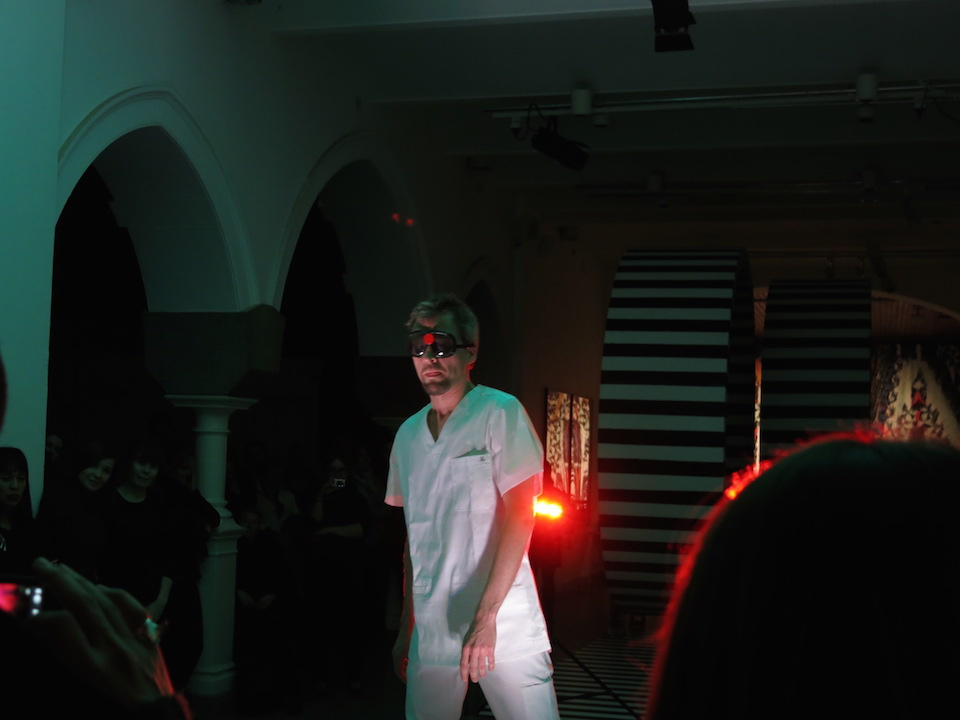

At biomusic.cc, we study new ways to make production and live performance of electronic music physical, immediate and purposeful.
We are a startup experienced in adaptive music applications, consulting and research with an emphasis on the biological basis of musical behaviour across cultures.
We are artists, designers and product developers serving clients that include musicians, researchers, enterprises and non-commercial organisations alike. We offer insights into future musicianship and audience experiences. We are available for commissions in the fields of concept design, prototyping, system analysis, user testing and market research. Our content services provide customers scientifically valid bio-art and proven methodologies for their own productions.
In recent years, we’ve been actively developing a mobile app that uses some of our findings to let users create a personalised, ever-changing musical experience for every occasion. We believe this is the future of music.
 Live at Design Museum, Helsinki, 2014.
{% include footer.html %}